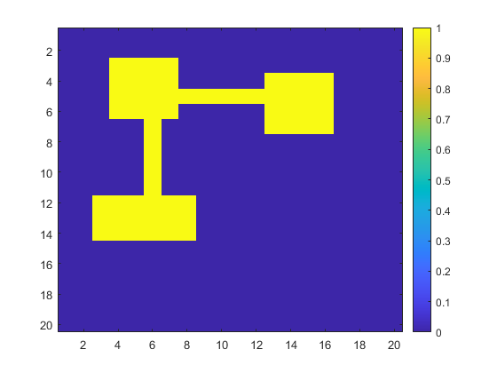
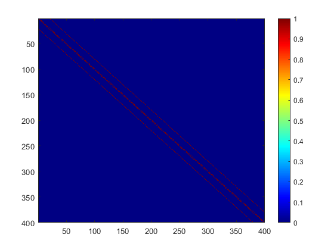
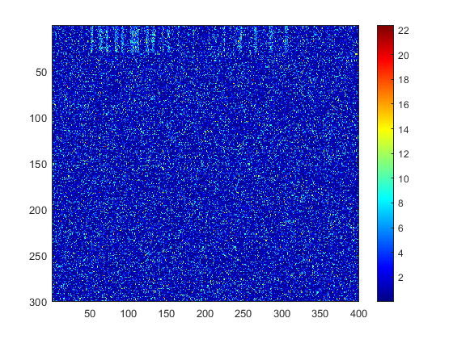
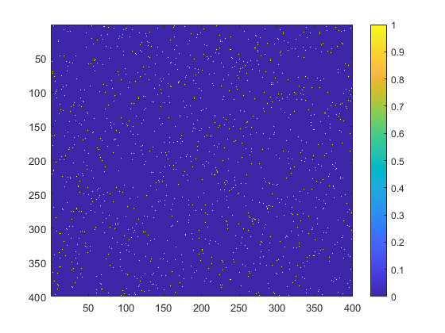
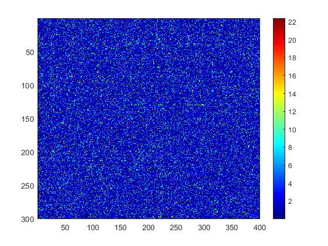
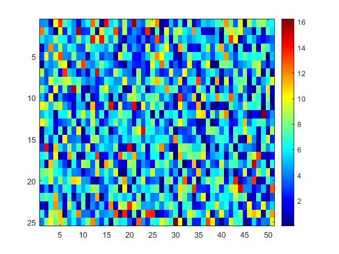
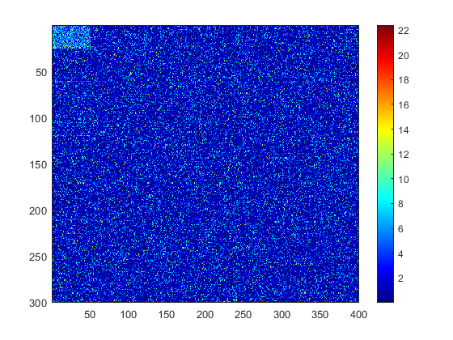
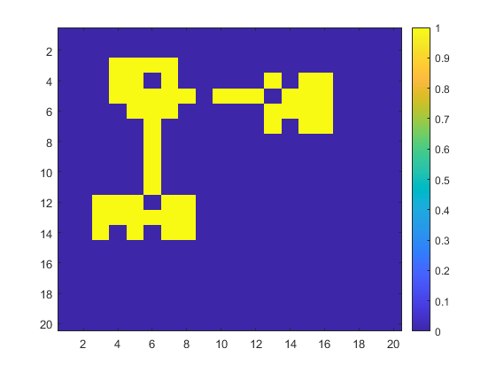
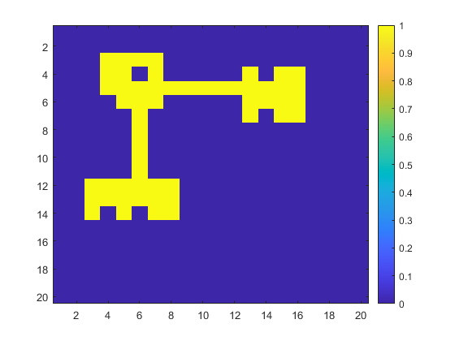

Contents
- This demo evaluate the performance of Algorithm 1 and A2 in a bipartite graph with an IGDB, such the the columns within the IGDB are retricted in a spatial cluster
- Generate a group of voxels with a spatial cluster
- The graph to indicate the spatial connectivity
- Permute nodes in both matrices
- Detect IGDB from the bipartite graph
- Voxels in the detected IGDB may not be spatially connected
- Apply Algorithm A2 to ensure the contiguity
This demo evaluate the performance of Algorithm 1 and A2 in a bipartite graph with an IGDB, such the the columns within the IGDB are retricted in a spatial cluster
rng(11)
k=60; % case+control
q1=0.8;q2=0.2;
mu0=0;mu1=0.8;sigma=1;
delta=(mu1-mu0)/sigma*sqrt(k/4);
N = 300; M = 400; n = 30; m = 60;
Generate a group of voxels with a spatial cluster
20*20 voxels with a voxel cluster that forms IGDB structure with rows
col_nodes = zeros(20,20); %col_nodes(3:6,2:8) = ones(4,7); %col_nodes(12:14,3:11) = ones(3,9); %col_nodes(7:11,6) = ones(5,1); col_nodes(3:6,4:7) = ones(4,4); col_nodes(12:14,3:8) = ones(3,6); col_nodes(7:11,6) = ones(5,1); col_nodes(5,8:12) = ones(1,5); col_nodes(4:7,13:16) = ones(4,4); figure;imagesc(col_nodes);colorbar;
The graph to indicate the spatial connectivity
xval = (1:20)'*ones(1,20); yval = xval'; x_vec = xval(:); y_vec = yval(:); distW0 = zeros(M); for i = 1:size(distW0,1) for j = 1:size(distW0,2) distW0(i,j) = sum(abs([x_vec(i) y_vec(i)]-[x_vec(j) y_vec(j)])); end end distW = distW0<2; distW = distW-eye(M); figure;imagesc(distW);colormap jet;colorbar; true_voxels = col_nodes(:); s_true = 1:n; t_true = find(true_voxels); G = zeros(N,M); G(s_true,t_true) = ones(n,m); true_edge = G(:); false_edge = 1-true_edge; W_vec=trnd(k-2,N*M,1); idx_true_edge = find(true_edge); idx_false_edge = find(false_edge); sample_idx_true = datasample(idx_true_edge,floor(q1*sum(true_edge)),'Replace',false); sample_idx_false = datasample(idx_false_edge,ceil(q2*sum(false_edge)),'Replace',false); W_vec(sample_idx_true) = nctrnd(k-2,delta,size(sample_idx_true)); W_vec(sample_idx_false) = nctrnd(k-2,delta,size(sample_idx_false)); W_n = reshape(W_vec,N,M); p=2*tcdf(-abs(W_n),k-2); logP=-log(p); W_org=logP; figure;imagesc(W_org);colormap jet;colorbar; 
Permute nodes in both matrices
perm_matrix = reshape((1:N*M),N,M); row_perm_idx = randperm(N); col_perm_idx = randperm(M); perm_matrix = perm_matrix(row_perm_idx,col_perm_idx); perm_vec = perm_matrix(:); [result ID]=sort(perm_vec); W_vec = W_org(:); W1_vec = W_vec(perm_vec); W1 = reshape(W1_vec,N,M); perm_matrix2 = squareform(1:(M*(M-1)/2)); perm_matrix2 = perm_matrix2(col_perm_idx,col_perm_idx); perm_vec2 = squareform(perm_matrix2); distW_vec = squareform(distW); distW1_vec = distW_vec(perm_vec2); distW1 = squareform(distW1_vec); figure;imagesc(distW1);colorbar;snapnow figure;imagesc(W1);colormap jet;colorbar;snapnow distW0_vec = squareform(distW0); distW0_vec_perm = distW0_vec(perm_vec2); distW0_perm = squareform(distW0_vec_perm); %figure;imagesc(distW0_perm);colorbar;snapnow 
Detect IGDB from the bipartite graph
c_vec0 = 0.1:0.1:5; r=-log(0.05); lambda_vec0 = 1:0.05:2; [s_rev,t_rev, c_rev, lambda_rev]=greedy_lik(W1,c_vec0,lambda_vec0,r,10); s_in = setdiff(1:N,s_rev); t_in = setdiff(1:M,t_rev); figure;imagesc(W1(s_in,t_in));colormap jet;colorbar; figure;imagesc(W1([s_in sort(s_rev)],[t_in sort(t_rev)]));colormap jet;colorbar; 
Voxels in the detected IGDB may not be spatially connected
raw_t = zeros(M,1);
raw_t(col_perm_idx(t_in)) = ones(size(t_in));
t_shape = reshape(raw_t,20,20);
figure;imagesc(t_shape);colorbar;
%find(true_voxels(col_perm_idx))' %t_in
 Apply Algorithm A2 to ensure the contiguity
node_weights = sum(W1(s_in,:),1); t_in_new = Refine_spatial(t_in,distW0_perm,node_weights); raw_t_new = zeros(M,1); raw_t_new(col_perm_idx(t_in_new)) = ones(size(t_in_new)); t_shape_new = reshape(raw_t_new,20,20); figure;imagesc(t_shape_new);colorbar;